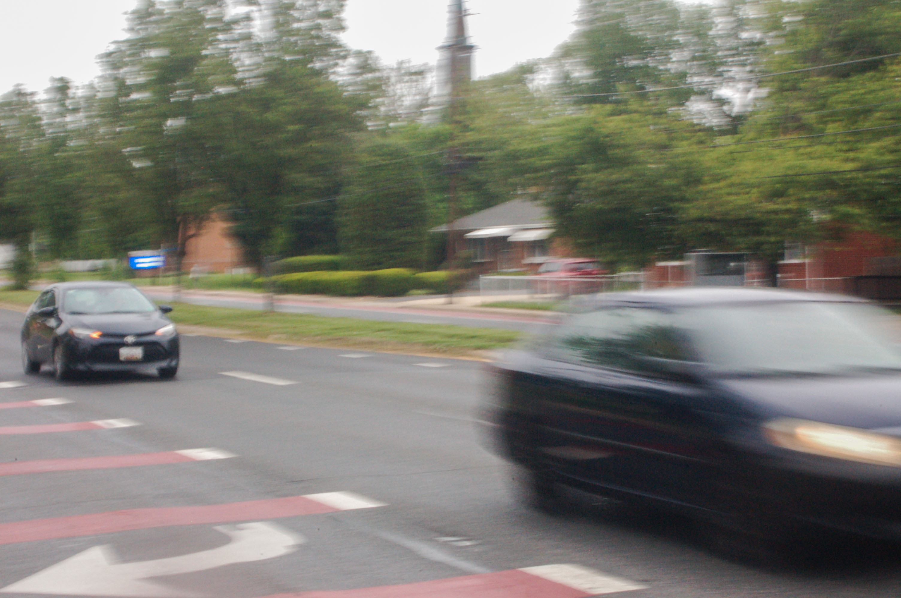
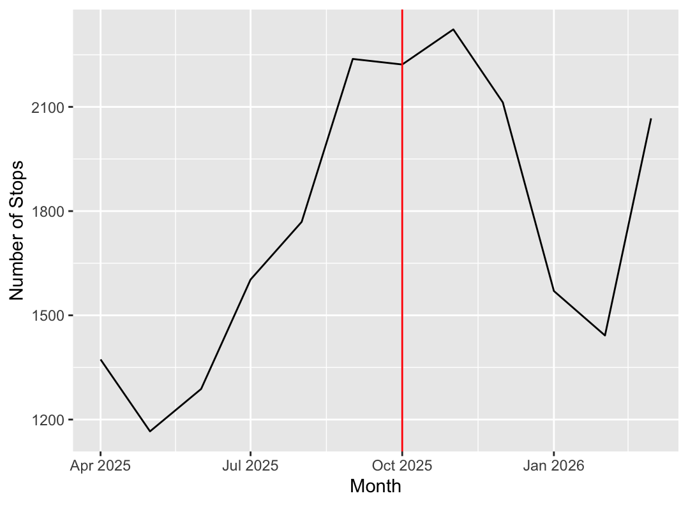
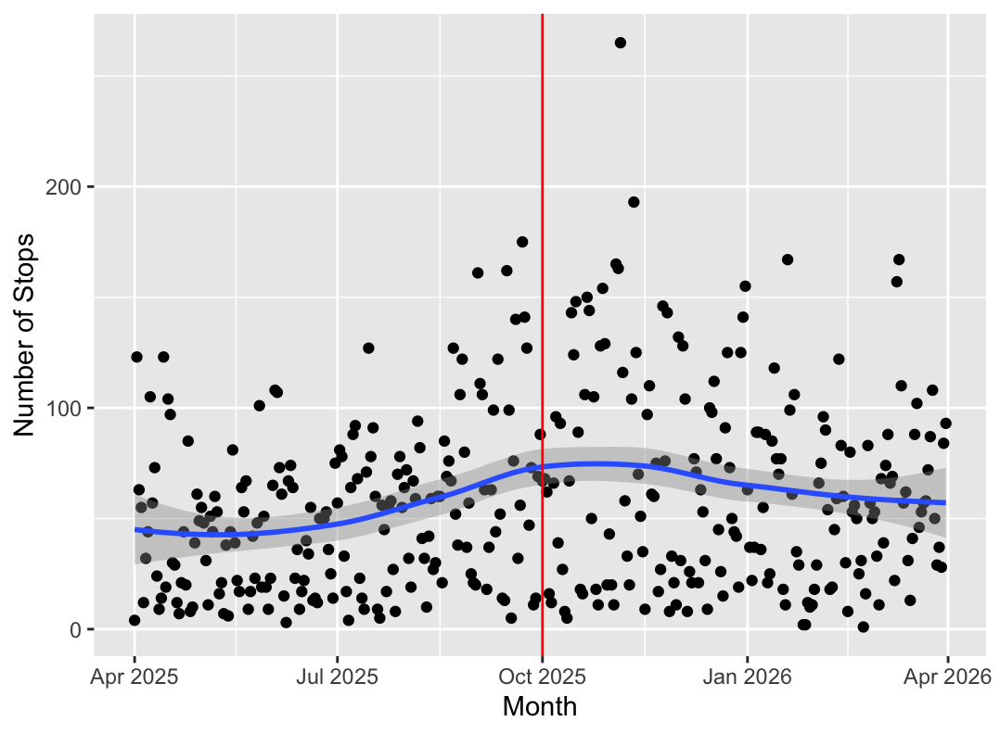

On October 1, 2025, Montgomery County passed a new law as a part of the Vision Zero Initiative to eliminate serious and fatal injury crashes. The new legislation increased speeding penalties under a graduated fine schedule, with fines rising for drivers exceeding 16 miles per hour of the speed limit. The base fine of $40 for speeds between 12 and 15 over the speed limit did not change.
The transition from a flat fine for all instances of speeding to a tiered schedule was intended to deter “dangerous speeders”, per a County press release published on September 30, 2025.
Additionally, another law passed that would enable legislation for placing speed cameras on high crash roadways. “The higher fines for drivers going 16 miles per hour or more over the speed limit and ability to place cameras on roads with the highest crash rates are major steps forward in our efforts to ensure everyone gets home safe," said County Executive Marc Elrich.

Cars traveling along University Boulevard. Photo by Ash Newton
| Miles per hour over speed limit | Fines outside work zones, effective Oct. 1 |
|---|---|
| 12 to 15 | $40 |
| 16 to 19 | $70 |
| 20 to 29 | $120 |
| 30 to 39 | $230 |
| 40 or more | $425 |
An unexpected shift
However, if the graduated fine schedule was intended to prevent speeding incidents, it had the reverse effect: from October 1, 2025 to April 1, 2026, speeding incidents increased. Across that six-month period, Montgomery County’s Traffic Violations Data Portal recorded 11,774 incidents of speeding, an increase of 23.8% compared to the 9,503 incidents recorded in the six months preceding the new law.
This development isn’t simply a manifestation of seasonal patterns: Montgomery County recorded even fewer speeding incidents within the same timeframe a year prior, from October 2024 to April 2025. The Traffic Violations Data Portal recorded 8,923 speeding incidents during that period, 6% less than the following six months and 24.2% less than the period after the new law.
Neither does it represent increased proliferation of speed cameras across the county. The Traffic Violations Data Portal exclusively tracks incidents that initiated a response from police. While the new legislation only affects speeding incidents recorded by automated speeding cameras, this data can still be useful to understand speeding habits across Montgomery County. Models show speeding incidents increased sharply in September, before the law passed, and continued at a high rate from October through December before receding again, albeit remaining at a higher average than the year previous.

Diving deeper into the data reveals that speeding incidents likely peaked in early November due to one incredibly busy day: on November 5, the officers recorded 265 speeding incidents, 72 more than the second-highest count of 193, six days later on November 11.
Overall, the day-by-day data shows an incredibly wide range of variance. In November alone, some days counted a single-digit number of stops, with the monthly low at only eight incidents on November 27. In fact, the overall lowest daily count across the one-year period came after the new law was implemented. On February 22, officers reported one singular speeding incident.

Inconclusive results
Though monthly counts show a clear swing, it’s impossible to declare a true change in trend following October 1, 2025. Moreover, numerous factors contribute to rates of speeding other than the severity of fines. Zero Deaths Maryland names habitual speeding, running late, avoiding traffic and overconfidence in driving ability all as common motivators for speeding.
In the same article, the highway safety office elaborates, “posted speed limits are not arbitrary. They are the result of specific recommendations from safety engineers who consider decades of data on factors that contribute to crashes.”
“Speeding is one of the hallmark behaviors of aggressive driving. Do you speed or exhibit other common aggressive driving behaviors? If so, it’s not too late to modify your behavior. You just might save someone’s life, or your own."